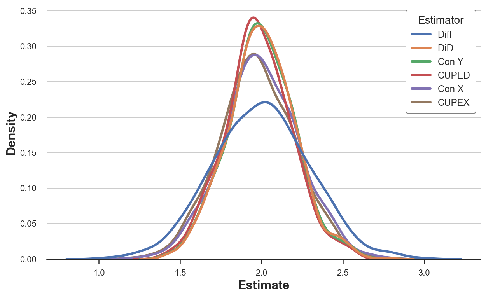

CUPED, or how to increase the power of AB tests

How to use historical data to tell noise and signal apart
The data generating process for individual $i$ at time $t$ is the following:
$$ Y_{it} = \alpha + \beta t + \gamma D_i + \delta t D_i + \varepsilon_i + u_{it} $$
where
- $\alpha = 5$
- $\beta = 0$
- $\gamma = 1$
- $\delta = 2$
- $D \sim Bern(0.5)$
- $\varepsilon \sim N(0,1)$
- $u \sim N(0,1)$
So that the true treatment effect is $\delta = 1$.
%matplotlib inline
%config InlineBackend.figure_format = 'retina'
from src.utils import *
from src.dgp import dgp_cuped
df = dgp_cuped().generate_data()
df.head()
| i | d | y0 | y1 | x0 | x1 | |
|---|---|---|---|---|---|---|
| 0 | 1 | 0 | 5.315635 | 6.359304 | 7.096171 | 11.373674 |
| 1 | 2 | 1 | 2.977799 | 5.751485 | 3.598911 | 9.191610 |
| 2 | 3 | 0 | 4.693796 | 7.025253 | 5.599818 | 12.675708 |
| 3 | 4 | 0 | 5.827975 | 6.540667 | 9.974215 | 9.025466 |
| 4 | 5 | 0 | 5.230095 | 6.910165 | 7.590962 | 8.609321 |
Difference in Means
In randomized experiments or A/B tests, randomization allows us to estimate the average treatment effect using a simple difference in means.
We can obtain the same estimate by regressing the post-treatment outcome $y_1$ on the treatment indicator $d$.
smf.ols('y1 ~ d', data=df).fit().summary().tables[1]
| coef | std err | t | P>|t| | [0.025 | 0.975] | |
|---|---|---|---|---|---|---|
| Intercept | 6.2995 | 0.211 | 29.904 | 0.000 | 5.881 | 6.718 |
| d | 1.7914 | 0.301 | 5.953 | 0.000 | 1.194 | 2.389 |
This estimator is unbiased, i.e. it delivers the correct value, in expectation.
Can we do better, using the pre-treatment information?
Stratification
CUPED
The CUPED (Controlled-Experiment using Pre-Experiment Data) estimator was first introduced by Deng, Xu, Kohavi, Walker (2013) and has been widely used in companies such as Netflix, Booking, Meta, TripAdvisor, and many other.
The idea of CUPED is the following. Suppose you have access to another random variable $X$ which is not affected by the treatment and has known expectation $\mathbb E[X]$. Then define
$$ \hat Y_{cuped,1} = \bar Y_1 - \theta \bar X + \theta \mathbb E [X] $$
where $\theta$ is a scalar. This estimator is an unbiased estimator for $\mathbb E[Y]$ since in expectation the two last terms cancel out. However, the variance of $\hat Y_{cuped,1}$ is
$$ \begin{aligned} \text{Var} \left( \hat Y_{cuped,1} \right) &= \text{Var} \left( \bar Y_1 - \theta \bar X + \theta \mathbb E [X] \right) = \newline &= \text{Var} \left( Y_1 - \theta X \right) / n = \newline &= \Big( \text{Var} (Y_1) + \theta^2 \text{Var} (X) - 2 \theta \text{Cov} (X,Y) \Big) / n \end{aligned} $$
Note that the variance of $\hat Y_{cuped,1}$ is minimized for
$$ \theta^* = \frac{\text{Cov} (X,Y)}{\text{Var} (X)} $$
Which is the OLS estimator of a linear regression of $Y$ on $X$. Substituting $\theta^*$ into the formula of the variance of $\hat Y_{cuped,1}$ we obtain
$$ \text{Var} \left( \hat Y_{cuped,1} \right) = \text{Var} (\bar Y) (1 - \rho^2) $$
where $\rho$ is the correlation between $Y$ and $X$. Therefore, the higher the correlation between $Y$ and $X$, the higher the variance reduction of CUPED.
We can then estimate the treatment effect using the difference between control and treatment group
$$ \begin{aligned} \Delta_{CUPED} &= \hat Y_{cuped,1}(D=1) - \hat Y_{cuped,1}(D=0) = \ &= \big( \bar Y_1 - \theta \bar X + \theta \mathbb E [X] \ \big| \ D = 1 \big) - \big( \bar Y_1 - \theta \bar X + \theta \mathbb E [X] \ \big| \ D = 0 \big) = \ &= \big( \bar Y_1 - \theta \bar X \ \big| \ D = 1 \big) - \big( \bar Y_1 - \theta \bar X \ \big| \ D = 0 \big) \end{aligned} $$
Note that $\mathbb E[X]$ cancels out when taking the difference. Therefore, it is sufficient to compute
$$ \hat Y_{cuped,1}' = \bar Y_1 - \theta \bar X $$
This is not an unbiased estimator of $\mathbb E[Y]$ but still delivers an unbiased estimator of the average treatment effect.
What is the optimal choice for the control variable $X$?
We know that $X$ should have the following properties:
- not affected by the treatment
- as correlated with $Y_1$ as possible
The authors of the paper suggest using the pre-treatment outcome $Y_{0}$ since it gives the most reduction in variance in practice.
Therefore, in practice, we can compute the CUPED estimate of the average treatment effect as follows:
- Regress $Y_1$ on $Y_0$ and estimate $\hat \theta$
- Compute $\hat Y_{cuped,1} = \bar Y_1 - \hat \theta \bar Y_0$
- Compute the difference of $\hat Y_{cuped,1}$ between treatment and control group
Equivalently, we can compute $\hat Y_{cuped,1}$ at the individual level and then regress it on the treatment dummy variable $D$.
theta = smf.ols('y1 ~ y0', data=df).fit().params[1]
theta
1.1458111091416718
df['y1_cuped'] = df['y1'] - theta * df['y0']
smf.ols('y1_cuped ~ d', data=df).fit().summary().tables[1]
| coef | std err | t | P>|t| | [0.025 | 0.975] | |
|---|---|---|---|---|---|---|
| Intercept | 0.4008 | 0.143 | 2.810 | 0.006 | 0.118 | 0.684 |
| d | 1.9415 | 0.204 | 9.529 | 0.000 | 1.537 | 2.346 |
The standard error is 33% smaller!
No Pre-treatment Outcome
We could use CUPED also without $Y_0$, we just need another variable that is correlated with $Y$.
theta_x = smf.ols('y1 ~ x0', data=df).fit().params[1]
theta_x
0.49315539693983107
df['y1_cuped_x'] = df['y1'] - theta_x * df['x0']
smf.ols('y1_cuped_x ~ d', data=df).fit().summary().tables[1]
| coef | std err | t | P>|t| | [0.025 | 0.975] | |
|---|---|---|---|---|---|---|
| Intercept | 2.5108 | 0.169 | 14.847 | 0.000 | 2.175 | 2.846 |
| d | 1.9000 | 0.242 | 7.865 | 0.000 | 1.421 | 2.379 |
Now CUPED is less efficient but still more efficient than the simple difference.
CUPED vs Other
Control for Y0
Is CUPED just the simple difference with an additional control variable?
smf.ols('y1 ~ y0 + d', data=df).fit().summary().tables[1]
| coef | std err | t | P>|t| | [0.025 | 0.975] | |
|---|---|---|---|---|---|---|
| Intercept | -0.0061 | 0.603 | -0.010 | 0.992 | -1.204 | 1.192 |
| y0 | 1.2249 | 0.114 | 10.755 | 0.000 | 0.999 | 1.451 |
| d | 1.9519 | 0.205 | 9.529 | 0.000 | 1.545 | 2.358 |
What about $X_0$?
smf.ols('y1 ~ x0 + d', data=df).fit().summary().tables[1]
| coef | std err | t | P>|t| | [0.025 | 0.975] | |
|---|---|---|---|---|---|---|
| Intercept | 2.2259 | 0.580 | 3.837 | 0.000 | 1.075 | 3.377 |
| x0 | 0.5302 | 0.072 | 7.343 | 0.000 | 0.387 | 0.674 |
| d | 1.9082 | 0.243 | 7.852 | 0.000 | 1.426 | 2.390 |
DiD
Is CUPED just DiD?
df_long = pd.wide_to_long(df, stubnames='y', i='i', j='t').reset_index()
df_long.head()
| i | t | x1 | d | y1_cuped_x | y1_cuped | x0 | y | |
|---|---|---|---|---|---|---|---|---|
| 0 | 1 | 0 | 11.373674 | 0 | 2.859789 | 0.268590 | 7.096171 | 5.315635 |
| 1 | 2 | 0 | 9.191610 | 1 | 3.976662 | 2.339490 | 3.598911 | 2.977799 |
| 2 | 3 | 0 | 12.675708 | 0 | 4.263673 | 1.647050 | 5.599818 | 4.693796 |
| 3 | 4 | 0 | 9.025466 | 0 | 1.621829 | -0.137091 | 9.974215 | 5.827975 |
| 4 | 5 | 0 | 8.609321 | 0 | 3.166641 | 0.917464 | 7.590962 | 5.230095 |
smf.ols('y ~ t * d', data=df_long).fit().summary().tables[1]
| coef | std err | t | P>|t| | [0.025 | 0.975] | |
|---|---|---|---|---|---|---|
| Intercept | 5.1481 | 0.174 | 29.608 | 0.000 | 4.805 | 5.491 |
| t | 1.1514 | 0.246 | 4.683 | 0.000 | 0.666 | 1.636 |
| d | -0.1310 | 0.248 | -0.527 | 0.599 | -0.621 | 0.359 |
| t:d | 1.9224 | 0.351 | 5.473 | 0.000 | 1.230 | 2.615 |
Did seems the least efficient method.
Comparison
Let’s compare the methods.
def simulate(K=1000):
# Initialize coefficients
results = pd.DataFrame(columns=['k', 'Estimator', 'Estimate'])
# Compute coefficients
for k in range(K):
temp = pd.DataFrame({'k': [k] * 6,
'Estimator': ['Diff ', 'DiD ', 'Con Y', 'CUPED', 'Con X', 'CUPEX'],
'Estimate': [0] * 6})
# Draw data
df = dgp_cuped().generate_data(seed=k)
# Single diff
temp['Estimate'][0] = smf.ols('y1 ~ d', data=df).fit().params[1]
# Double diff
df_long = pd.wide_to_long(df, stubnames='y', i='i', j='t').reset_index()
temp['Estimate'][1] = smf.ols('y ~ d * t', data=df_long).fit().params[3]
# Autoregression
temp['Estimate'][2] = smf.ols('y1 ~ y0 + d', data=df).fit().params[2]
# Cuped
theta = smf.ols('y1 ~ y0', data=df).fit().params[1]
df['y_cuped'] = df['y1'] - theta * df['y0']
temp['Estimate'][3] = smf.ols('y_cuped ~ d', data=df).fit().params[1]
# Autoregression x
temp['Estimate'][4] = smf.ols('y1 ~ x0 + d', data=df).fit().params[2]
# Cuped x
theta_x = smf.ols('y1 ~ x0', data=df).fit().params[1]
df['y_cuped_x'] = df['y1'] - theta_x * df['x0']
temp['Estimate'][5] = smf.ols('y_cuped_x ~ d', data=df).fit().params[1]
results = pd.concat((results, temp))
return results.reset_index(drop=True)
results = simulate()
Let’s plot the distribution of the estimated parameters.
sns.kdeplot(data=results, x="Estimate", hue="Estimator");

Are the means different?
results.groupby('Estimator')[['Estimate']].mean()
| Estimate | |
|---|---|
| Estimator | |
| CUPED | 1.979737 |
| CUPEX | 1.975514 |
| Con X | 1.996559 |
| Con Y | 2.000648 |
| DiD | 2.001238 |
| Diff | 1.998847 |
All estimators seem unbiased.
What about the standard errors?
results.groupby('Estimator')[['Estimate']].std()
| Estimate | |
|---|---|
| Estimator | |
| CUPED | 0.206764 |
| CUPEX | 0.236497 |
| Con X | 0.236456 |
| Con Y | 0.207183 |
| DiD | 0.205980 |
| Diff | 0.297775 |
Notes
- All estimators seem unbiased
- All estimators seem to have the same variance, a part from the simple difference
- The DiD estimator has a lower variance than the OLS estimate suggested
Conclusion
CONCLUSION
References
[1] A. Deng, Y. Xu, R. Kohavi, T. Walker, Improving the Sensitivity of Online Controlled Experiments by Utilizing Pre-Experiment Data (2013), WSDM.
[2] H. Xir, J. Aurisset, Improving the sensitivity of online controlled experiments: Case studies at Netflix (2013), ACM SIGKDD.
[3] Y. Guo, D. Coey, M. Konutgan, W. Li, C. Schoener, M. Goldman, Machine Learning for Variance Reduction in Online Experiments
[1] A. Belloni, D. Chen, V. Chernozhukov, C. Hansen, Sparse Models and Methods for Optimal Instruments With an Application to Eminent Domain (2012), Econometrica.
[2] A. Belloni, V. Chernozhukov, C. Hansen, Inference on treatment effects after selection among high-dimensional controls (2014), The Review of Economic Studies.
[3] V. Chernozhukov, D. Chetverikov, M. Demirer, E. Duflo, C. Hansen, W. Newey, J. Robins, Double/debiased machine learning for treatment and structural parameters (2018), The Econometrics Journal.
[4] P. Hünermund, B. Louw, I. Caspi, Double Machine Learning and Automated Confounder Selection - A Cautionary Tale (2022), working paper.
Related Articles
- Double Debiased Machine Learning (part 1)
- Double Debiased Machine Learning (part 2)
- Understanding Omitted Variable Bias
- Understanding The Frisch-Waugh-Lovell Theorem
- DAGs and Control Variables
Code
You can find the original Jupyter Notebook here:
https://github.com/matteocourthoud/Blog-Posts/blob/main/cuped.ipynb